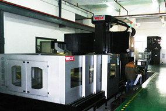
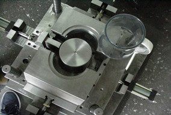
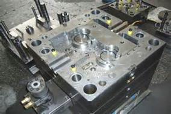
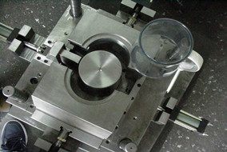
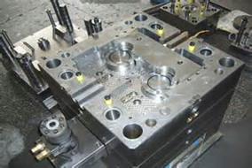

{% include right-content.html %}
Mold Manufacturing
- Equipped with the large capacity of up-to-date machine tools including vertical gantry CNC machining-centers, double-head EDM machine tools and spotting presses.
- Capable of making big molds with maximum weight 30T
- Experienced with low pressure injection ( cloth wrapped tool). Gas=injection and overmolding ( 2K tool)
- Precision machining on the sub-micron order
- Stress-free smooth process and speedy delivery
- Complete maintenance
   
 